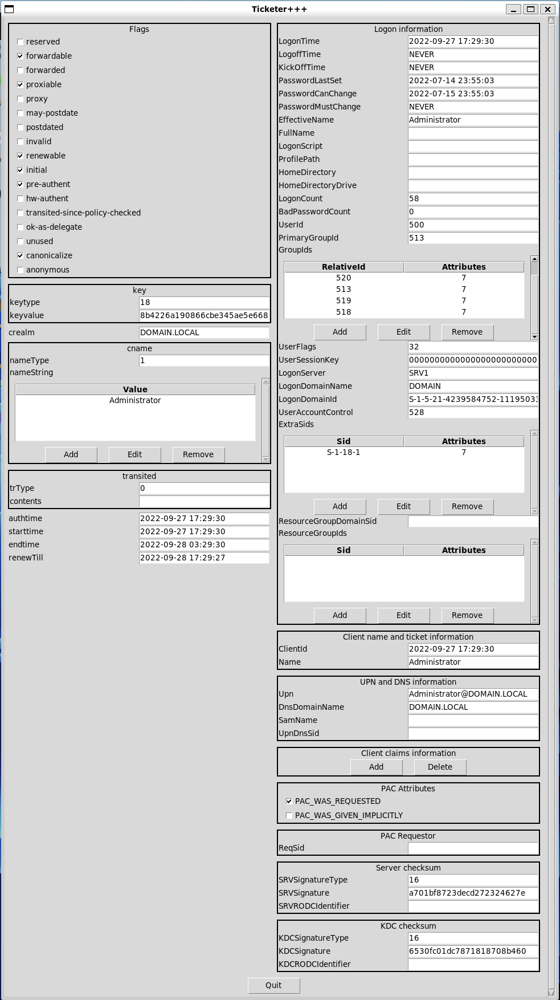
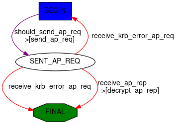
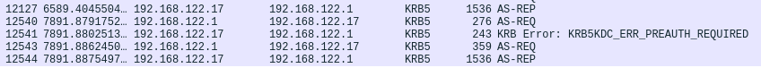
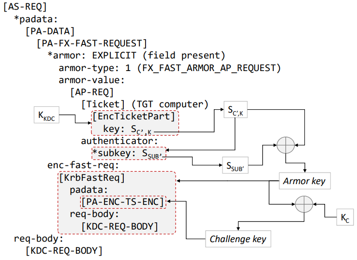

Kerberos
Scapy’s Kerberos implementation is accessed through two main components:
Ticketer: a module that allows manipulating Kerberos tickets;KerberosSSP: an implementation of a GSSAPI SSP for Kerberos, usable in any of Scapy’s client that support GSSAPI, for both authentication and encryption.
The general idea is that the first one allows to request tickets and perform almost all Kerberos related operations (S4U2Self, S4U2Proxy, FAST armoring, U2U, DMSA, etc.). The latter is used once a final Service Ticket is obtained, by other parts of Scapy, for instance SMB, LDAP or DCE/RPC.
Ticketer module
The Ticketer module can be used both from the CLI or programmatically to perform operations on Kerberos tickets. To use it, you must first create an instance of a Ticketer, which acts as both a ccache (holds tickets) and a keytab (holds secrets).
This section tries to give many usage examples, but isn’t exhaustive. For more details regarding the parameters of each functions, it is encouraged to have a look at the docstrings of KerberosClient.
Request TGT: see the docstring of
krb_as_req()
>>> load_module("ticketer")
>>> t = Ticketer()
>>> t.request_tgt("Administrator@DOMAIN.LOCAL")
Enter password: ************
>>> t.show()
Tickets:
0. Administrator@DOMAIN.LOCAL -> krbtgt/DOMAIN.LOCAL@DOMAIN.LOCAL
Start time End time Renew until Auth time
31/08/23 11:38:34 31/08/23 21:38:34 31/08/23 21:38:35 31/08/23 01:38:34
Then request a ST, using the TGT: see the docstring of
krb_tgs_req()
>>> # The TGT we just got has an ID of 0
>>> t.request_st(0, "host/dc1.domain.local")
>>> t.show()
Tickets:
0. Administrator@DOMAIN.LOCAL -> krbtgt/DOMAIN.LOCAL@DOMAIN.LOCAL
Start time End time Renew until Auth time
31/08/23 11:38:34 31/08/23 21:38:34 31/08/23 21:38:35 31/08/23 01:38:34
1. Administrator@DOMAIN.LOCAL -> host/dc1.domain.local@DOMAIN.LOCAL
Start time End time Renew until Auth time
31/08/23 11:39:07 31/08/23 21:38:34 31/08/23 21:38:35 31/08/23 01:38:34
Use ticket as SSP: the
ssp()function.
>>> # We use ticket 1 from the above store.
>>> smbclient("dc1.domain.local", ssp=t.ssp(1))
Request a TGT using a hash: see the docstring of
krb_as_req()
>>> from scapy.libs.rfc3961 import EncryptionType
>>> load_module("ticketer")
>>> t = Ticketer()
>>> # Using the HashNT
>>> t.request_tgt("Administrator@DOMAIN.LOCAL", key=Key(EncryptionType.RC4_HMAC, bytes.fromhex("2b576acbe6bcfda7294d6bd18041b8fe")))
>>> # Using the AES-256-SHA1-96 Kerberos Key
>>> t.request_tgt("Administrator@domain.local", key=Key(EncryptionType.AES256_CTS_HMAC_SHA1_96, bytes.fromhex("63a2577d8bf6abeba0847cded36b9aed202c23750eb9c56b6155be1cc946bb1d")))
Renew a TGT or ST:
>>> t.renew(0) # renew TGT
>>> t.renew(1) # renew ST. Works only with 'host/' SPNs
Import tickets from a ccache:
Note
We first added a realm DOMAIN.LOCAL with a kdc to /etc/krb5.conf
$ kinit Administrator@DOMAIN.LOCAL
Password for Administrator@DOMAIN.LOCAL:
$ scapy
>>> load_module("ticketer")
>>> t = Ticketer()
>>> t.open_ccache("/tmp/krb5cc_1000")
>>> t.show()
Tickets:
1. Administrator@DOMAIN.LOCAL -> krbtgt/DOMAIN.LOCAL@DOMAIN.LOCAL
Start time End time Renew until Auth time
31/08/23 12:08:15 31/08/23 22:08:15 01/09/23 12:08:12 31/08/23 12:08:15
Export tickets into a ccache:
>>> load_module("ticketer")
>>> t = Ticketer()
>>> t.request_tgt("Administrator@domain.local", password="ScapyScapy1")
>>> t.save("/tmp/krb5cc_1000")
>>> exit()
$ klist
Ticket cache: FILE:/tmp/krb5cc_1000
Default principal: Administrator@DOMAIN.LOCAL
Valid starting Expires Service principal
08/31/2023 12:08:15 08/31/2023 23:08:15 krbtgt/DOMAIN.LOCAL@DOMAIN.LOCAL
renew until 09/01/2023 12:08:12
Perform S4U2Self
>>> load_module("ticketer")
>>> t = Ticketer()
>>> t.request_tgt("SERVER1$@domain.local", key=Key(EncryptionType.AES256_CTS_HMAC_SHA1_96, bytes.fromhex("63a2577d8bf6abeba0847cded36b9aed202c23750eb9c56b6155be1cc946bb1d")))
>>> t.request_st(0, "host/SERVER1", for_user="Administrator@domain.local")
>>> t.show()
CCache tickets:
0. SERVER1$@DOMAIN.LOCAL -> krbtgt/DOMAIN.LOCAL@DOMAIN.LOCAL
canonicalize+pre-authent+initial+renewable+forwardable
Start time End time Renew until Auth time
15/04/25 20:15:17 16/04/25 06:10:22 16/04/25 06:10:22 15/04/25 20:15:17
1. Administrator@domain.local -> host/SERVER1@DOMAIN.LOCAL
canonicalize+pre-authent+renewable+forwardable
Start time End time Renew until Auth time
15/04/25 20:15:20 16/04/25 06:10:22 16/04/25 06:10:22 15/04/25 20:15:17
Request a ticket for a DMSA
For more information about DMSAs and how to create them, consult the relevant Microsoft documentation. In this example we allowed SERVER1$ to retrieve the managed password of dmsa_user$.
>>> load_module("ticketer")
>>> t = Ticketer()
>>> t.request_tgt("SERVER1$@domain.local", key=Key(EncryptionType.AES256_CTS_HMAC_SHA1_96, bytes.fromhex("63a2577d8bf6abeba0847cded36b9aed202c23750eb9c56b6155be1cc946bb1d")))
>>> t.request_st(0, "krbtgt/domain.local", for_user="dmsa_user$@domain.local", dmsa=True)
INFO: 3 DMSA keys found and imported !
>>> t.show()
Keytab name: UNSAVED
Principal Timestamp KVNO Keytype
dmsa_user$@domain.local 22/05/25 22:03:58 1 AES256-CTS-HMAC-SHA1-96
dmsa_user$@domain.local 22/05/25 22:03:58 2 AES128-CTS-HMAC-SHA1-96
dmsa_user$@domain.local 22/05/25 22:03:58 3 RC4-HMAC
CCache tickets:
0. SERVER1$@DOMAIN.LOCAL -> krbtgt/DOMAIN.LOCAL@DOMAIN.LOCAL
canonicalize+pre-authent+initial+renewable+forwardable
Start time End time Renew until Auth time
22/05/25 22:06:32 23/05/25 08:03:53 23/05/25 08:03:53 22/05/25 22:06:32
1. dmsa_user$@domain.local -> krbtgt/DOMAIN.LOCAL@DOMAIN.LOCAL
canonicalize+pre-authent+renewable+forwardable
Start time End time Renew until Auth time
22/05/25 22:06:37 23/05/25 08:03:53 23/05/25 08:03:53 22/05/25 22:06:32
As you can see, DMSA keys were imported in the keytab. You can use those as detailed in some of the following sections.
Load and use keytab for client
>>> load_module("ticketer")
>>> t = Ticketer()
>>> t.open_keytab("test.keytab")
>>> t.show()
Keytab name: test.keytab
Principal Timestamp KVNO Keytype
Administrator@domain.local 14/04/25 21:47:59 0 AES128-CTS-HMAC-SHA1-96
Administrator@domain.local 14/04/25 21:47:59 0 AES256-CTS-HMAC-SHA1-96
Administrator@domain.local 14/04/25 21:47:59 0 RC4-HMAC
No tickets in CCache.
>>> t.request_tgt("Administrator@domain.local")
Load and use keytab for server:
>>> t.open_keytab("server1.keytab")
>>> t.show()
Keytab name: server1.keytab
Principal Timestamp KVNO Keytype
host/Server1.domain.local@DOMAIN.LOCAL 01/01/70 01:00:00 10 RC4-HMAC
No tickets in CCache.
>>> ssp = t.ssp("host/Server11.domain.local@DOMAIN.LOCAL")
>>> # Example: start a SMB server
>>> smbserver(ssp=ssp)
Create client keytab:
>>> t = Ticketer()
>>> t.add_cred("Administrator@domain.local", etypes="all")
Enter password: ************
>>> t.show()
Keytab name: UNSAVED
Principal Timestamp KVNO Keytype
Administrator@domain.local 15/04/25 20:24:13 1 AES128-CTS-HMAC-SHA1-96
Administrator@domain.local 15/04/25 20:24:13 2 AES256-CTS-HMAC-SHA1-96
Administrator@domain.local 15/04/25 20:24:13 3 RC4-HMAC
No tickets in CCache.
Change password using kpasswd in ‘set’ mode:
>>> t = Ticketer()
>>> t.request_tgt("Administrator@domain.local")
Enter password: ************
>>> t.kpasswdset(0, "SERVER1$@domain.local")
INFO: Using 'Set Password' mode. This only works with admin privileges.
Enter NEW password: ***********
Craft tickets: We can start by showing how to craft a golden ticket:
>>> load_module("ticketer")
>>> t = Ticketer()
>>> t.create_ticket()
User [User]: Administrator
Domain [DOM.LOCAL]: DOMAIN.LOCAL
Domain SID [S-1-5-21-1-2-3]: S-1-5-21-4239584752-1119503303-314831486
Group IDs [513, 512, 520, 518, 519]: 512, 520, 513, 519, 518
User ID [500]: 500
Primary Group ID [513]:
Extra SIDs [] :S-1-18-1
Expires in (h) [10]:
What key should we use (AES128-CTS-HMAC-SHA1-96/AES256-CTS-HMAC-SHA1-96/RC4-HMAC) ? [AES256-CTS-HMAC-SHA1-96]:
Enter the NT hash (AES-256) for this ticket (as hex): 6df5a9a90cb076f4d232a123d9c24f46ae11590a5430710bc1881dca337989ce
>>> t.show()
Tickets:
0. Administrator@DOMAIN.LOCAL -> krbtgt/DOMAIN.LOCAL@DOMAIN.LOCAL
>>> t.save(fname="blob.ccache")
Edit tickets with the GUI
Let’s assume you’ve acquired the KRBTGT of a KDC, plus you’ve used kinit to get a ticket.
This ticket was saved to a .ccache file, that we’ll know try to open.
Note
You can get the demo ccache file using the following
cat <<EOF | base64 -d > krb.ccache
BQQADAABAAj/////AAAAAAAAAAEAAAABAAAADERPTUFJTi5MT0NBTAAAAA1BZG1pbmlzdHJhdG9y
AAAAAQAAAAEAAAAMRE9NQUlOLkxPQ0FMAAAADUFkbWluaXN0cmF0b3IAAAACAAAAAgAAAAxET01B
SU4uTE9DQUwAAAAGa3JidGd0AAAADERPTUFJTi5MT0NBTAASAAAAIItCJqGQhmy+NFrl5miCPt1T
WcsAvUeaZCi8j+sbpVdSYzMy+mMzMvpjM7+aYzSEdwBQ4QAAAAAAAAAAAAAAAARIYYIERDCCBECg
AwIBBaEOGwxET01BSU4uTE9DQUyiITAfoAMCAQKhGDAWGwZrcmJ0Z3QbDERPTUFJTi5MT0NBTKOC
BAQwggQAoAMCARKhAwIBAqKCA/IEggPuZiwq78yj+MeN444a8dY7GN4BHYZNm+wS88EeILC73Ebm
9cgxGzMbHMJ7Ixk+kPpHunqmpn+6WCah9HVOpQUO6rLgfQej7BApsqEeBYzjHkj03ivOAX6cKRXu
QP+g9xCVlwiChvopD+bKd3RlFixXV6Z8xTqOMgSEakypz/MMgHPR6ec1tesicX+Xd8Lzj7E9IElS
2xXk8WDiZTX1lvPOZPmo2WARcY0EBWUNf3xyj4fdLQ4iDkYQNH+qikUJm2OjUfWtz8z2adm2ES4x
iBr4aVYSlKIetuKxZLjObGx7AyfsbHHCN4SwbBkDCj+BEZ83fLbwOVtUd7/7xcGiJk7Er3b0s5pO
L3Aw1IyOu8ryEgNuoKWr3V2pH83D+5cA1TefA/vJ/jpHB42uMLBaQY9G7p6iX1IOt+Z7U9lvf0hu
WHiyLqj0IVE3p9z39Lb1BGNxXZ08VE8pRCDtD3QmlV+gpSfvzoYmT3wpvfws7iw+sifrS3ZR64AI
4OsmlEakVIgpawQn+CuVmtBwFGzYqa7Z7yNoFb0hSfP4bXMidYTylNyGz0p35O6r+Y9PNC2/xL60
bYNLDDED2MWWTK1IUu7TZcqOUJN+IZdhItXN4Yxatt1VKMOmgMCiGXEXZt1bajwQOuZa1fVzoxVD
oOvO/eF0kGKVEDD2OQfN4JIBDCLJB2MkjJ9s0DpvCny5p7dEG8feTEDB10k3Ov7ll6Usnb51M9e6
JKOibfKUdLk2Q+7Zf2uP/ROXaGmESEG902TyRU1uPOGuZ37AHFksJbUOEgMDJA3arILfqdY7HELC
ObeKbE67orZFi5JJMcUrIjucnP1s8PCD5iOeMHR/EwLei96U/odWteARj17WHczDhi3byT8QPDFg
rBWFjL4zBCDW4H4snyQsLK+PBNg/PNcfQEwdVoFMniqnh3Y6vClTNCmUh/RU5LTrXw58PPXjdzdK
z4J8n+JV4cfNsTEp7wfHMRZO5O7VA/c1gpqLfMLjcY2yPYWDj796Q4YaHI+JDkwzQ3tldJlGtG9s
/xdnFY9WhLA18uoIb3tWT2pXBQcUtMrVFltyvm96aCCy6fiTZQYUfmSnei+c+cE/5P1ZuDGRiYEB
BooAPm9/kYAGYWIE/0sYqb9JVJe6DfDfy7iaXmQ8YGN2ZzV/zx2XtCQkDqdfzw0muxWQVRB/gNG8
aCyQV/IqPvX7D1CtswupdbJQadOTv36yUi8jCRKsHmS7qTyRqnYKuxIJuxMT443d68rDJdJ775nW
YEXAl5m3ECCkT2S7tZxAVEkwT9lbjWvcbRfkdsuhiPMK0Eu2yR2RsCiwlTmGkpqftCsh9zAoyLof
QWxwYwAAAAAAAAABAAAAAQAAAAxET01BSU4uTE9DQUwAAAANQWRtaW5pc3RyYXRvcgAAAAAAAAAD
AAAADFgtQ0FDSEVDT05GOgAAABVrcmI1X2NjYWNoZV9jb25mX2RhdGEAAAAHcGFfdHlwZQAAACBr
cmJ0Z3QvRE9NQUlOLkxPQ0FMQERPTUFJTi5MT0NBTAAAAAAAAAAAAAAAAAAAAAAAAAAAAAAAAAAA
AAAAAAAAAAAAAAAAATIAAAAA
EOF
>>> load_module("ticketer")
>>> t = Ticketer()
>>> t.open_ccache("krb.ccache")
>>> t.show()
Tickets:
1. Administrator@DOMAIN.LOCAL -> krbtgt/DOMAIN.LOCAL@DOMAIN.LOCAL
>>> t.edit_ticket(0)
Enter the NT hash (AES-256) for this ticket (as hex): 6df5a9a90cb076f4d232a123d9c24f46ae11590a5430710bc1881dca337989ce
>>> t.resign_ticket(0)
>>> t.save()
1660
>>> # Other stuff you can do
>>> tkt = t.dec_ticket(0)
>>> tkt
<EncTicketPart flags=forwardable, proxiable, renewable, .........>
>>> t.update_ticket(0, tkt)

Note
Remember to call resign_ticket to update the Server and KDC checksums in the PAC.
Cheat sheet
Command |
Description |
|---|---|
|
Load ticketer++ |
|
Create a Ticketer object |
|
Open a ccache file |
|
Save a ccache file |
|
List the tickets |
|
Forge a ticket |
|
Decipher a ticket |
|
Re-inject a deciphered ticket |
|
Edit a ticket (GUI) |
|
Resign a ticket |
|
Request a TGT |
|
Request a ST using ticket i |
|
Renew a TGT/ST |
Other useful commands
To change your own password, you can use the plain kpasswd command from scapy.layers.kerberos.
>>> kpasswd("User1@domain.local")
Enter password: **********
Enter NEW password: *********
To change the password of someone else, you can also the following. You need to have the rights to do so. You can also use the method from Scapy’s Ticketer.
>>> kpasswd("Administrator@domain.local", "User1@domain.local")
Enter password: **********
Enter NEW password: *********
Inner-workings
Behind the scenes, Scapy includes a (tiny) kerberos client, that has basic functionalities such as:
AS-REQ
Note
Full doc at krb_as_req(). krb_as_req actually calls a Scapy automaton that has the following behavior:

>>> res = krb_as_req("user1@DOMAIN.LOCAL", password="Password1")
This is what it looks like with wireshark:

The result is a named tuple with both the full AP-REP and the decrypted session key:
>>> res.asrep.show()
###[ KRB_AS_REP ]###
pvno = 0x5 <ASN1_INTEGER[5]>
msgType = 'AS-REP' 0xb <ASN1_INTEGER[11]>
\padata \
|###[ PADATA ]###
| padataType= 'PA-ETYPE-INFO2' 0x13 <ASN1_INTEGER[19]>
| \padataValue\
| |###[ ETYPE_INFO2 ]###
| | \seq \
| | |###[ ETYPE_INFO_ENTRY2 ]###
| | | etype = 'AES-256' 0x12 <ASN1_INTEGER[18]>
| | | salt = <ASN1_GENERAL_STRING[b'DOMAIN.LOCALuser1']>
| | | s2kparams = None
crealm = <ASN1_GENERAL_STRING[b'DOMAIN.LOCAL']>
[...]
>>> res.sessionkey.toKey()
<Key 18 (32 octets)>
Some more examples:
Enforce RC4:
>>> from scapy.libs.rfc3961 import EncryptionType
>>> res = krb_as_req("user1@DOMAIN.LOCAL", etypes=[EncryptionType.RC4_HMAC])
Ask for a DES_CBC_MD5 sessionkey:
>>> from scapy.libs.rfc3961 import EncryptionType
>>> res = krb_as_req("user1@DOMAIN.LOCAL", etypes=[EncryptionType.DES_CBC_MD5, EncryptionType.RC4_HMAC])
TGS-REQ
Note
Full doc at krb_tgs_req(). krb_tgs_req actually calls a Scapy automaton.
Ask for a ST:
Let’s reuse the TGT and session key we got in the AS-REQ:
>>> krb_tgs_req("user1@DOMAIN.LOCAL", "host/DC1", sessionkey=res.sessionkey, ticket=res.asrep.ticket)
Note
There is also a krb_as_and_tgs() function that does an AS-REQ then a TGS-REQ:
>>> krb_as_and_tgs("user1@DOMAIN.LOCAL", "host/DC1", password="Password1")
Other things you can do:
Renew a TGT:
>>> krb_tgs_req("user1@DOMAIN.LOCAL", "krbtgt/DOMAIN.LOCAL", sessionkey=res.sessionkey, ticket=res.asrep.ticket, renew=True)
Renew a ST:
Note
For some mysterious reason, this is rarely implemented in other tools.
>>> res2 = krb_tgs_req("user1@DOMAIN.LOCAL", "host/DC1", sessionkey=res.sessionkey, ticket=res.asrep.ticket)
>>> krb_tgs_req("user1@DOMAIN.LOCAL", "host/DC1", sessionkey=res2.sessionkey, ticket=res2.tgsrep.ticket, renew=True)
KerberosSSP
For Kerberos, the Scapy SSP is implemented in KerberosSSP.
You can typically use it in SMB_Client, SMB_Server, DCERPC_Client or DCERPC_Server.
Note
Remember that you can wrap it in a SPNEGOSSP
See GSSAPI for usage examples.
Decrypt kerberos packets manually
Note
This section is useful to understand the inner workings of Kerberos, but isn’t necessary to use Scapy’s implementation.
Kerberos packets contain encrypted content, let’s take the following packet:
>>> pkt = Ether(b"RT\x00iX\x13RT\x00!l+\x08\x00E\x00\x01]\xa7\x18@\x00\x80\x06\xdc\x83\xc0\xa8z\x9c\xc0\xa8z\x11\xc2\t\x00XT\xf6\xab#\x92\xc2[\xd6P\x18 \x14\xb6\xe0\x00\x00\x00\x00\x011j\x82\x01-0\x82\x01)\xa1\x03\x02\x01\x05\xa2\x03\x02\x01\n\xa3c0a0L\xa1\x03\x02\x01\x02\xa2E\x04C0A\xa0\x03\x02\x01\x12\xa2:\x048HHM\xec\xb0\x1c\x9bb\xa1\xca\xbf\xbc?-\x1e\xd8Z\xa5\xe0\x93\xba\x83X\xa8\xce\xa3MC\x93\xaf\x93\xbf!\x1e'O\xa5\x8e\x81Hx\xdb\x9f\rz(\xd9Ns'f\r\xb4\xf3pK0\x11\xa1\x04\x02\x02\x00\x80\xa2\t\x04\x070\x05\xa0\x03\x01\x01\xff\xa4\x81\xb70\x81\xb4\xa0\x07\x03\x05\x00@\x81\x00\x10\xa1\x120\x10\xa0\x03\x02\x01\x01\xa1\t0\x07\x1b\x05win1$\xa2\x0e\x1b\x0cDOMAIN.LOCAL\xa3!0\x1f\xa0\x03\x02\x01\x02\xa1\x180\x16\x1b\x06krbtgt\x1b\x0cDOMAIN.LOCAL\xa5\x11\x18\x0f20370913024805Z\xa6\x11\x18\x0f20370913024805Z\xa7\x06\x02\x04p\x1c\xc5\xd1\xa8\x150\x13\x02\x01\x12\x02\x01\x11\x02\x01\x17\x02\x01\x18\x02\x02\xffy\x02\x01\x03\xa9\x1d0\x1b0\x19\xa0\x03\x02\x01\x14\xa1\x12\x04\x10WIN1 ")
>>> pkt[TCP].payload.show()
###[ KerberosTCPHeader ]###
len = 305
###[ Kerberos ]###
\root \
|###[ KRB_AS_REQ ]###
| pvno = 0x5 <ASN1_INTEGER[5]>
| msgType = 'AS-REQ' 0xa <ASN1_INTEGER[10]>
| \padata \
| |###[ PADATA ]###
| | padataType= 'PA-ENC-TIMESTAMP' 0x2 <ASN1_INTEGER[2]>
| | \padataValue\
| | |###[ EncryptedData ]###
| | | etype = 'AES-256' 0x12 <ASN1_INTEGER[18]>
| | | kvno = None
| | | cipher = <ASN1_STRING[b"HHM\xec\xb0\x1c\x9bb\xa1\xca\xbf\xbc?-\x1e\xd8Z\xa5\xe0\x93\xba\x83X\xa8\xce\xa3MC\x93\xaf\x93\xbf!\x1e'O\xa5\x8e\x81Hx\xdb\x9f\rz(\xd9Ns'f\r\xb4\xf3pK"]>
| |###[ PADATA ]###
| | padataType= 'PA-PAC-REQUEST' 0x80 <ASN1_INTEGER[128]>
| | \padataValue\
| | |###[ PA_PAC_REQUEST ]###
| | | includePac= True <ASN1_BOOLEAN[-1]>
| \reqBody \
| |###[ KRB_KDC_REQ_BODY ]###
| | kdcOptions= forwardable, renewable, canonicalize, renewable-ok <ASN1_BIT_STRING[0100000010...0000010000]=b'@\x81\x00\x10' (0 unused bit)>
| | \cname \
| | |###[ PrincipalName ]###
| | | nameType = 'NT-PRINCIPAL' 0x1 <ASN1_INTEGER[1]>
| | | nameString= [<ASN1_GENERAL_STRING[b'win1$']>]
| | realm = <ASN1_GENERAL_STRING[b'DOMAIN.LOCAL']>
| | \sname \
| | |###[ PrincipalName ]###
| | | nameType = 'NT-SRV-INST' 0x2 <ASN1_INTEGER[2]>
| | | nameString= [<ASN1_GENERAL_STRING[b'krbtgt']>, <ASN1_GENERAL_STRING[b'DOMAIN.LOCAL']>]
| | from = None
| | till = 2037-09-13 02:48:05 UTC <ASN1_GENERALIZED_TIME['20370913024805Z']>
| | rtime = 2037-09-13 02:48:05 UTC <ASN1_GENERALIZED_TIME['20370913024805Z']>
| | nonce = 0x701cc5d1 <ASN1_INTEGER[1880933841]>
| | etype = [0x12 <ASN1_INTEGER[18]>, 0x11 <ASN1_INTEGER[17]>, 0x17 <ASN1_INTEGER[23]>, 0x18 <ASN1_INTEGER[24]>, -0x87 <ASN1_INTEGER[-135]>, 0x3 <ASN1_INTEGER[3]>]
| | \addresses \
| | |###[ HostAddress ]###
| | | addrType = 'NetBios' 0x14 <ASN1_INTEGER[20]>
| | | address = <ASN1_STRING[b'WIN1 ']>
| | encAuthorizationData= None
| | additionalTickets= None
You likely want to decrypt pkt.root.padata[0].padataValue which is an EncryptedData packet. To do so, we need the Key class.
>>> from scapy.libs.rfc3961 import Key, EncryptionType
>>> enc = pkt[Kerberos].root.padata[0].padataValue
>>> k = Key(EncryptionType.AES256_CTS_HMAC_SHA1_96, key=bytes.fromhex("7fada4e566ae4fb270e2800a23ae87127a819d42e69b5e22de0ddc63da80096d"))
The first parameter of the Key constructor is a value from EncryptionType, in this case EncryptionType.AES256_CTS_HMAC_SHA1_96. This is the same value than enc.etype.val, which allows to know which key to use.
We can then proceed to perform the decryption:
>>> enc.decrypt(k)
<PA_ENC_TS_ENC patimestamp=2022-07-15 17:18:47 UTC <ASN1_GENERALIZED_TIME['20220715171847Z']> pausec=0x9a4db <ASN1_INTEGER[632027]> |>
Compute Kerberos keys
Note
Encryption for Kerberos 5 is defined in RFC3961
You may want to compute a Kerberos key from a password + salt. There is an API for that described in RFC3961 as “string-to-key”. Our implementation is a class method as follow:
- Key.string_to_key(etype, string, salt, params=None)
Compute the kerberos key for a certain encryption type.
- Parameters:
etype (int) – The EncryptionType to use. May be any value from
EncryptionTypestring (bytes) – The “string” bytes to use. This is the user password in almost all well-used cases. They must be passed as bytes.
salt (bytes) – The salt bytes to use. What value to use depends if you are considering a MACHINE account or a USER account, for the latter, it’s just
the concatenation of the principal's realm and name components, in order, with no separators.(RFC4120 sect 4)params (bytes) – The opaque “parameter” used by string-to-key. The RFC defines this field in a very general manner but it is basically only used in AES, in which it is the iteration count as a big-endian int (
struct.pack(">L", 4096)by default)
Let’s run a few examples:
>>> # Get the AES256 key for User1@DOMAIN.LOCAL with "Password1"
>>> from scapy.libs.rfc3961 import Key, EncryptionType
>>> Key.string_to_key(EncryptionType.AES256_CTS_HMAC_SHA1_96, b"Password1", b"DOMAIN.LOCALUser1")
>>> print(_.key)
b'm\x07H\xc5F\xf4\xe9\x92\x05\xe7\x8f\x8d\xa7h\x1dN\xc5R\n\xe4\x81UCr\x0c*d|\x1a\xe8\x14\xc9'
Note
The following example is from https://datatracker.ietf.org/doc/html/rfc3962#appendix-B
>>> # Get the AES128 key for raeburn@ATHENA.MIT.EDU with "password", with an iteration count of 1200
>>> k = Key.string_to_key(EncryptionType.AES128_CTS_HMAC_SHA1_96, b"password", b"ATHENA.MIT.EDUraeburn", struct.pack(">L", 1200))
>>> print(k.key.hex())
'4c01cd46d632d01e6dbe230a01ed642a'
Decrypt FAST manually
Note
This section is useful to understand the inner workings of Kerberos FAST, but FAST can simply be used in Ticketer through the armor_with parameter when performing either a ASREQ or TGSREQ. For more details related to how FAST works, have a look at RFC6113.
Let’s take a Kerberos AS-REQ packet with FAST armoring (RFC6113):

FAST armoring in AS-REQ. Credit to this paper by A. Bordes.
>>> pkt = Ether(bytes.fromhex(b'52540013d0835254003ea3be08004502089636a1400080063ad3c0a87fd2c0a87fc8fecc0058eea93069573b278e50180402897400000000086a6a82086630820862a103020105a20302010aa38207a23082079e3082079aa10402020088a28207900482078ca082078830820784a082064a30820646a003020101a182063d048206396e82063530820631a003020105a10302010ea20703050000000000a38205796182057530820571a003020105a10c1b0a444f4d312e4c4f43414ca21f301da003020102a11630141b066b72627467741b0a444f4d312e4c4f43414ca382053930820535a003020112a103020102a282052704820523acc8b7671c0d50522f1a8d8452ce450aceb40fff0229e8ee546bccf1512e4877ef93dde465595260a6a5a8e85ea38600ce8dff7d510f3c744e2c43eb9d3187d638f716c29b6e7aa9eb407de28d0161f49013966eda0a161ff174dad42e7aa500cfe298541215448013ffe4883b6b1166f908f50de129487fe77fff874fd4102cdcce8db8dbeb8da02f08cc88b3790cdad5ec499959c7e79d6fef107d1e17ce80cc3df050b7e7a1c31f278e4fd4ea9523c950876f174be363234f8495b9550de1560ba17daeafbf133f78991053d929ad3fd668327d42288e6581671daaef908682ee282e17c31d8f8bb55d27fce155ee2e84a2ff8bc9600891be15e6ede3e1bbd2742a7af8b0a32c48973c9e3776a69647bab11592756c5a15b9101c392efa35d000abb3dabccd97e64426e3fd8d47e0e369c83b5391f38947d536d351c061081d654eef1a3861cdb2ea2bc48222b450d1b7d09c0670493bccc60dfcaa5cfe46fd50adf8e388204a4691dc5f0c3dbae0b4da6ac2dd781f149a444840aaa3a3c3befb5a5c04ee0405baed66afcf9b988d10ea14a955f43df79465e6fc02a12bce3870988950f1ab48e1a4f876f351671c5061e6399a63cb0479f7bd017dfd9bc5be192faf6d4f11e6ee6003933eeaf632f0056c4c1ccd183d7977cfca85419fe5b039674419d802068e792c9576ae2a88bfbeb1f59273226782c6efb288717d8f7a4bc3bf4c697fcac1adc1829f0a914f2559b278ccadd108eb87a11dacc88e4302e9af627474e57171192b94c6b358f8f98e308596215d2fb9d9c2b49c4cbedcb43fc231b86f0493d56b82962cf3383a84f8922c2b99f8fa8fdd85797b09a6e60f72007c0379988be2ff1cfc16f21300c1b4b784174005a9185f760e68ef94b9384eb24decee31b63d1b92278cd75b85d4d80c4e83306533a9d95aa6207cbfbeb0970a41c44aba59839f007923ecd8ff0de8314990a435dbea4dedbee16faf5ab2be9f96d691cfa983a6c843bd183f84c1b4998a3eaa907cae6b82b0ae8363f3edd8cb03d3c9c60ff55a84d8a292ea20555fbd6ce5ad4ad7a6b4bc5bff2e02c477a7a8a98d5a387d389caa172c400b151d95871b2aa16a040dc71a9be5f0774b06a5ca87674ccb4109a2c41db9e3160704218ad495d0751194fbef4becae4d7be24b9d968da592256a2b22cf724e989e71a60d0603b59bebd475285f793794b7a18af49a2b68670e3a6247c453274e35c863a16b5023c6c94659e25abb27c760f989ac0bbf9a5b125d0ea34fb03225cc93d5b8b6829e906883ee76cf8ee61dfacc488e8dc5cbc8ba9705a9e915a68f838232394f97fb1aac4a2a90fe17d46f9c51946a2bf9598df7f5b5e7ee692a78860eea3cef748a5be36529228e40b4aec83ebc8bb14176a4c565b06500e9517229b8340c55812101dbbc6bee693c35873082a5a1a53b35cf3509193d4dc5175c9360a00da71692ba205b3264aecc9ecc8bca31fec43efc8701423bb484f6f21699439dd30f71228f16eaab96b7de3547721d1635bbfe50678900ac378a4958b6c34964f3e0dc843880dbde57fb4a76ab85eba2b190bfdaefc7ba17e109f839493b0f2d6fc7ea17403bebe06f2809314ca514606f54668082364ed6752019f27e1df74f93fcf1c25630a29713a89d4a998c444bc91279c6fc66e0aa5dec72be316e1160cf9f90d5915c464b6bfec5216e901be4726db596a15745511c63736a69ac9ecb9e86601c631b4992653c320e6983562fa613134560cb606621e9661ac5961313ee70868ab48d6010173d8a96fffdb2baf4afe18c846d3fed6f30b9a809d72e647735fc536edec543abc232480d28660395a4819e30819ba003020112a281930481901273d5af61ad426d51d0757e897917caeb6fc1b6950554e8d750f95d27f444e3aaf7ae0bf4595b5e906d9682dbdeedcf6eb42a84ab8092997b783f57710127228165deeb2ce5e09e2ddc71555dc31970a8312d888b8ae766382098276d62b4bd76f34cbc889e24ad5405ec037ceb724fdb71fe247fe2a414a037ed33c796f4475fcfb5993eed147b6d63d740d58da5b0a1173015a003020110a10e040c75f02d8d2954e0ae1a9e0653a282011930820115a003020112a282010c04820108ae9bbc4629c80f4a383a69c4583824295c75f34b000b3fdbdaab073a042935e32c29e0ee2b2b446e4a6a2592362d0d593cddd74dacc24f16353776e1b5d192ad1cf5e63f66f40a134ecb87c077c30922bc0cab00ae23d187d56090d9098f843c54fabe7c012ff87e317dfe339c40911264609d489b041a4e9b52c0eb03ee88a393d17da92786bd1716b92eb0d7a5a24a64ade0870dea8a7e138acdf209ee277cb3fadeedab173fd64cc10a1004010774658b94852639bda10a5e8aff29174e3d2c7032c32631b074afdac0e6832bae74de9be19e522f63bc8499753a209291fee1861c29096cc8ee3cfda5be235b0aa95635916edcfcdaf90b896e2eaa5a57d5e4da0b00408f4201a481af3081aca00703050040810010a11a3018a003020101a111300f1b0d61646d2d302d66617374656e62a2061b04444f4d31a3193017a003020102a110300e1b066b72627467741b04444f4d31a511180f32303337303931333032343830355aa611180f32303337303931333032343830355aa70602043f58a7a0a81530130201120201110201170201180202ff79020103a91d301b3019a003020114a112041053525620202020202020202020202020'))
>>> pkt[TCP].payload.show()
###[ KerberosTCPHeader ]###
len = 2154
###[ Kerberos ]###
\root \
|###[ KRB_AS_REQ ]###
| pvno = 0x5 <ASN1_INTEGER[5]>
| msgType = 'AS-REQ' 0xa <ASN1_INTEGER[10]>
| \padata \
| |###[ PADATA ]###
| | padataType= 'PA-FX-FAST' 0x88 <ASN1_INTEGER[136]>
| | \padataValue\
| | |###[ PA_FX_FAST_REQUEST ]###
| | | \armoredData\
| | | |###[ KrbFastArmoredReq ]###
| | | | \armor \
| | | | |###[ KrbFastArmor ]###
| | | | | armorType = 'FX_FAST_ARMOR_AP_REQUEST' 0x1 <ASN1_INTEGER[1]>
| | | | | \armorValue\
| | | | | |###[ KRB_AP_REQ ]###
| | | | | | pvno = 0x5 <ASN1_INTEGER[5]>
| | | | | | msgType = 'AP-REQ' 0xe <ASN1_INTEGER[14]>
| | | | | | apOptions = <ASN1_BIT_STRING[0000000000...0000000000]=b'\x00\x00\x00\x00' (0 unused bit)>
| | | | | | \ticket \
| | | | | | |###[ KRB_Ticket ]###
| | | | | | | tktVno = 0x5 <ASN1_INTEGER[5]>
| | | | | | | realm = <ASN1_GENERAL_STRING[b'DOM1.LOCAL']>
| | | | | | | \sname \
| | | | | | | |###[ PrincipalName ]###
| | | | | | | | nameType = 'NT-SRV-INST' 0x2 <ASN1_INTEGER[2]>
| | | | | | | | nameString= [<ASN1_GENERAL_STRING[b'krbtgt']>, <ASN1_GENERAL_STRING[b'DOM1.LOCAL']>]
| | | | | | | \encPart \
| | | | | | | |###[ EncryptedData ]###
| | | | | | | | etype = 'AES-256' 0x12 <ASN1_INTEGER[18]>
| | | | | | | | kvno = 0x2 <ASN1_INTEGER[2]>
| | | | | | | | cipher = <ASN1_STRING[b'\xac\xc8\xb7g\x1c\rPR/\x1a\x8d\x84R\xceE\n\xce\xb4\x0f\xff\x02)\xe8\xeeTk\xcc\xf1Q.Hw\xef\x93\xdd\xe4eYR`\xa6\xa5\xa8\xe8^\xa3\x86\x00\xce\x8d\xff}Q\x0f<tN,C\xeb\x9d1\x87\xd68\xf7\x16\xc2\x9bnz\xa9\xeb@}\xe2\x8d\x01a\xf4\x90\x13\x96n\xda\n\x16\x1f\xf1t\xda\xd4.z\xa5\x00\xcf\xe2\x98T\x12\x15D\x80\x13\xff\xe4\x88;k\x11f\xf9\x08\xf5\r\xe1)H\x7f\xe7\x7f\xff\x87O\xd4\x10,\xdc\xce\x8d\xb8\xdb\xeb\x8d\xa0/\x08\xcc\x88\xb3y\x0c\xda\xd5\xecI\x99Y\xc7\xe7\x9do\xef\x10}\x1e\x17\xce\x80\xcc=\xf0P\xb7\xe7\xa1\xc3\x1f\'\x8eO\xd4\xea\x95#\xc9P\x87o\x17K\xe3c#O\x84\x95\xb9U\r\xe1V\x0b\xa1}\xae\xaf\xbf\x13?x\x99\x10S\xd9)\xad?\xd6h2}B(\x8ee\x81g\x1d\xaa\xef\x90\x86\x82\xee(.\x17\xc3\x1d\x8f\x8b\xb5]\'\xfc\xe1U\xee.\x84\xa2\xff\x8b\xc9`\x08\x91\xbe\x15\xe6\xed\xe3\xe1\xbb\xd2t*z\xf8\xb0\xa3,H\x97<\x9e7v\xa6\x96G\xba\xb1\x15\x92ulZ\x15\xb9\x10\x1c9.\xfa5\xd0\x00\xab\xb3\xda\xbc\xcd\x97\xe6D&\xe3\xfd\x8dG\xe0\xe3i\xc8;S\x91\xf3\x89G\xd56\xd3Q\xc0a\x08\x1deN\xef\x1a8a\xcd\xb2\xea+\xc4\x82"\xb4P\xd1\xb7\xd0\x9c\x06pI;\xcc\xc6\r\xfc\xaa\\\xfeF\xfdP\xad\xf8\xe3\x88 JF\x91\xdc_\x0c=\xba\xe0\xb4\xdaj\xc2\xddx\x1f\x14\x9aDH@\xaa\xa3\xa3\xc3\xbe\xfbZ\\\x04\xee\x04\x05\xba\xedf\xaf\xcf\x9b\x98\x8d\x10\xea\x14\xa9U\xf4=\xf7\x94e\xe6\xfc\x02\xa1+\xce8p\x98\x89P\xf1\xabH\xe1\xa4\xf8v\xf3Qg\x1cPa\xe69\x9ac\xcb\x04y\xf7\xbd\x01}\xfd\x9b\xc5\xbe\x19/\xafmO\x11\xe6\xee`\x03\x93>\xea\xf62\xf0\x05lL\x1c\xcd\x18=yw\xcf\xca\x85A\x9f\xe5\xb09gD\x19\xd8\x02\x06\x8ey,\x95v\xae*\x88\xbf\xbe\xb1\xf5\x92s"g\x82\xc6\xef\xb2\x88q}\x8fzK\xc3\xbfLi\x7f\xca\xc1\xad\xc1\x82\x9f\n\x91O%Y\xb2x\xcc\xad\xd1\x08\xeb\x87\xa1\x1d\xac\xc8\x8eC\x02\xe9\xafbtt\xe5qq\x19+\x94\xc6\xb3X\xf8\xf9\x8e0\x85\x96!]/\xb9\xd9\xc2\xb4\x9cL\xbe\xdc\xb4?\xc21\xb8o\x04\x93\xd5k\x82\x96,\xf38:\x84\xf8\x92,+\x99\xf8\xfa\x8f\xdd\x85y{\t\xa6\xe6\x0fr\x00|\x03y\x98\x8b\xe2\xff\x1c\xfc\x16\xf2\x13\x00\xc1\xb4\xb7\x84\x17@\x05\xa9\x18_v\x0eh\xef\x94\xb98N\xb2M\xec\xee1\xb6=\x1b\x92\'\x8c\xd7[\x85\xd4\xd8\x0cN\x830e3\xa9\xd9Z\xa6 |\xbf\xbe\xb0\x97\nA\xc4J\xbaY\x83\x9f\x00y#\xec\xd8\xff\r\xe81I\x90\xa45\xdb\xeaM\xed\xbe\xe1o\xafZ\xb2\xbe\x9f\x96\xd6\x91\xcf\xa9\x83\xa6\xc8C\xbd\x18?\x84\xc1\xb4\x99\x8a>\xaa\x90|\xaek\x82\xb0\xae\x83c\xf3\xed\xd8\xcb\x03\xd3\xc9\xc6\x0f\xf5Z\x84\xd8\xa2\x92\xea U_\xbdl\xe5\xadJ\xd7\xa6\xb4\xbc[\xff.\x02\xc4w\xa7\xa8\xa9\x8dZ8}8\x9c\xaa\x17,@\x0b\x15\x1d\x95\x87\x1b*\xa1j\x04\r\xc7\x1a\x9b\xe5\xf0wK\x06\xa5\xca\x87gL\xcbA\t\xa2\xc4\x1d\xb9\xe3\x16\x07\x04!\x8a\xd4\x95\xd0u\x11\x94\xfb\xefK\xec\xaeM{\xe2K\x9d\x96\x8d\xa5\x92%j+"\xcfrN\x98\x9eq\xa6\r\x06\x03\xb5\x9b\xeb\xd4u(_y7\x94\xb7\xa1\x8a\xf4\x9a+hg\x0e:bG\xc4S\'N5\xc8c\xa1kP#\xc6\xc9FY\xe2Z\xbb\'\xc7`\xf9\x89\xac\x0b\xbf\x9a[\x12]\x0e\xa3O\xb02%\xcc\x93\xd5\xb8\xb6\x82\x9e\x90h\x83\xeev\xcf\x8e\xe6\x1d\xfa\xccH\x8e\x8d\xc5\xcb\xc8\xba\x97\x05\xa9\xe9\x15\xa6\x8f\x83\x8229O\x97\xfb\x1a\xacJ*\x90\xfe\x17\xd4o\x9cQ\x94j+\xf9Y\x8d\xf7\xf5\xb5\xe7\xeei*x\x86\x0e\xea<\xeft\x8a[\xe3e)"\x8e@\xb4\xae\xc8>\xbc\x8b\xb1Av\xa4\xc5e\xb0e\x00\xe9Qr)\xb84\x0cU\x81!\x01\xdb\xbck\xeei<5\x870\x82\xa5\xa1\xa5;5\xcf5\t\x19=M\xc5\x17\\\x93`\xa0\r\xa7\x16\x92\xba [2d\xae\xcc\x9e\xcc\x8b\xca1\xfe\xc4>\xfc\x87\x01B;\xb4\x84\xf6\xf2\x16\x99C\x9d\xd3\x0fq"\x8f\x16\xea\xab\x96\xb7\xde5Gr\x1d\x165\xbb\xfePg\x89\x00\xac7\x8aIX\xb6\xc3Id\xf3\xe0\xdc\x848\x80\xdb\xdeW\xfbJv\xab\x85\xeb\xa2\xb1\x90\xbf\xda\xef\xc7\xba\x17\xe1\t\xf89I;\x0f-o\xc7\xea\x17@;\xeb\xe0o(\t1L\xa5\x14`oTf\x80\x826N\xd6u \x19\xf2~\x1d\xf7O\x93\xfc\xf1\xc2V0\xa2\x97\x13\xa8\x9dJ\x99\x8cDK\xc9\x12y\xc6\xfcf\xe0\xaa]\xecr\xbe1n\x11`\xcf\x9f\x90\xd5\x91\\FKk\xfe\xc5!n\x90\x1b\xe4rm\xb5\x96\xa1WEQ\x1ccsji\xac\x9e\xcb\x9e\x86`\x1cc\x1bI\x92e<2\x0ei\x83V/\xa6\x13\x13E`\xcb`f!\xe9f\x1a\xc5\x96\x13\x13\xeep\x86\x8a\xb4\x8d`\x10\x17=\x8a\x96\xff\xfd\xb2\xba\xf4\xaf\xe1\x8c\x84m?\xedo0\xb9\xa8\t\xd7.dw5\xfcSn\xde\xc5C\xab\xc22H\r(f\x03\x95']>
| | | | | | \authenticator\
| | | | | | |###[ EncryptedData ]###
| | | | | | | etype = 'AES-256' 0x12 <ASN1_INTEGER[18]>
| | | | | | | kvno = None
| | | | | | | cipher = <ASN1_STRING[b'\x12s\xd5\xafa\xadBmQ\xd0u~\x89y\x17\xca\xebo\xc1\xb6\x95\x05T\xe8\xd7P\xf9]\'\xf4D\xe3\xaa\xf7\xae\x0b\xf4Y[^\x90m\x96\x82\xdb\xde\xed\xcfn\xb4*\x84\xab\x80\x92\x99{x?Wq\x01\'"\x81e\xde\xeb,\xe5\xe0\x9e-\xdcqU]\xc3\x19p\xa81-\x88\x8b\x8a\xe7f8 \x98\'mb\xb4\xbdv\xf3L\xbc\x88\x9e$\xadT\x05\xec\x03|\xebrO\xdbq\xfe$\x7f\xe2\xa4\x14\xa07\xed3\xc7\x96\xf4G_\xcf\xb5\x99>\xed\x14{mc\xd7@\xd5\x8d\xa5\xb0']>
| | | | checksumtype= 'HMAC-SHA1-96-AES256' 0x10 <ASN1_INTEGER[16]>
| | | | checksum = <ASN1_STRING[b'u\xf0-\x8d)T\xe0\xae\x1a\x9e\x06S']>
| | | | \encFastReq\
| | | | |###[ EncryptedData ]###
| | | | | etype = 'AES-256' 0x12 <ASN1_INTEGER[18]>
| | | | | kvno = None
| | | | | cipher = <ASN1_STRING[b'<\xaf4\xec\xef\xd8Lxg\x03\xc2\x009\xdea\xbc\x01\xeb\xed\x9b\xe7\xe5\x1c\x90\xa5\x82\xfe\xc8Rik\xf9/\xd1e\xcd[^\xf0\xf9\xb8\xed\xb6f\xc9\xcc\xa5i\r6N\\j\xd6\x9e}[\xc7\xe0Uuz\xaab\x06B\x8a0%$\x14M]\x97\xcc\x0bd\xdb\x133PE\x03\x91q\xed\x1f\r\x11\x1c\xa1\xbdFQ\xeb\xca=t\xdb\x02\x9e\\m<\x7f\x86\x00\xc4NU\xb1L\xd3\xc7\xf6\xa1\\\x913@\x0eBU\xd7\x1f#{\xf2\x88\xc1\x86\x13|\xd0J_,\xab\xba1f\xde[\xf1\x11\x90\xa2\xe5\x96.M\xbb\xfb\x98\x01\xe3\xbes\xed\xe5\xa56\xeb\'\xa0\x86\xb6D\xf1"E\x19\x84Y\xc0c\xb8\xec\xba"\x8e\x1f\x92\t\xe0Z[\xcb\xb3\x9a\x12e\x1e\x1048\xeey\x98\xe6f\xd8b\x88\x12\xfa4\xbc\x07\xf4\xc4\xd0\xa4\xd8o\xe2\x07\x12\x8d\xe3~\x1f\xfd\x16\x9aL\xb8y\xcb[\x9d\xb8\xf9\xc3\xe8aC\xbf\xd44\t\xcaG\xe9\x0f;\xc8H\xa1\x83\x8f\xcer\t\xf5r\x96\xe4Ic\xa2\xd1\xe3\xd4']>
| \reqBody \
| |###[ KRB_KDC_REQ_BODY ]###
| | kdcOptions= forwardable, renewable, canonicalize, renewable-ok <ASN1_BIT_STRING[0100000010...0000010000]=b'@\x81\x00\x10' (0 unused bit)>
| | \cname \
| | |###[ PrincipalName ]###
| | | nameType = 'NT-PRINCIPAL' 0x1 <ASN1_INTEGER[1]>
| | | nameString= [<ASN1_GENERAL_STRING[b'adm-0-fastenb']>]
| | realm = <ASN1_GENERAL_STRING[b'DOM1']>
| | \sname \
| | |###[ PrincipalName ]###
| | | nameType = 'NT-SRV-INST' 0x2 <ASN1_INTEGER[2]>
| | | nameString= [<ASN1_GENERAL_STRING[b'krbtgt']>, <ASN1_GENERAL_STRING[b'DOM1']>]
| | from = None
| | till = 2037-09-13 02:48:05 UTC <ASN1_GENERALIZED_TIME['20370913024805Z']>
| | rtime = 2037-09-13 02:48:05 UTC <ASN1_GENERALIZED_TIME['20370913024805Z']>
| | nonce = 0x3f58a7a0 <ASN1_INTEGER[1062774688]>
| | etype = [0x12 <ASN1_INTEGER[18]>, 0x11 <ASN1_INTEGER[17]>, 0x17 <ASN1_INTEGER[23]>, 0x18 <ASN1_INTEGER[24]>, -0x87 <ASN1_INTEGER[-135]>, 0x3 <ASN1_INTEGER[3]>]
| | \addresses \
| | |###[ HostAddress ]###
| | | addrType = 'NetBios' 0x14 <ASN1_INTEGER[20]>
| | | address = <ASN1_STRING[b'SRV ']>
| | encAuthorizationData= None
| | additionalTickets= None
There are 3 encrypted payloads:
pkt.root.padata[0].padataValue.armoredData.armor.armorValue.ticket.encPart, encrypted using the KRBTGTpkt.root.padata[0].padataValue.armoredData.armor.armorValue.authenticator, encrypted using the ticket session key (that the clients gets from the first AS-REQ, and that that is also included in tickets for the server to use)pkt.root.padata[0].padataValue.armoredData.encFastReq, encrypted using using the armor key
We have the krbtgt for this demo:
>>> from scapy.libs.rfc3961 import Key, EncryptionType
>>> krbtgt_hex = "ac67a63d7155791fe31dace230ab516e818c453dfdbd44cbe691b240725c4907"
>>> krbtgt = Key(EncryptionType.AES256_CTS_HMAC_SHA1_96, key=bytes.fromhex(krbtgt_hex))
We can therefore decrypt the first payload:
>>> enc = pkt.root.padata[0].padataValue.armoredData.armor.armorValue.ticket.encPart
>>> encticketpart = enc.decrypt(krbtgt)
>>> encticketpart.show()
###[ EncTicketPart ]###
flags = forwardable, renewable, initial, pre-authent <ASN1_BIT_STRING[0100000011...0000000000]=b'@\xe1\x00\x00' (0 unused bit)>
\key \
|###[ EncryptionKey ]###
| keytype = 'AES-256' 0x12 <ASN1_INTEGER[18]>
| keyvalue = <ASN1_STRING[b'\xe3\xa2\x0f\x8e\xb2\xe1*\xe0\x7f\x86\xcc\x88\xe6,\x08>B\xd8)m/G\x82B;\x9f+\x86\xcd\xcd\xf4\x05']>
crealm = <ASN1_GENERAL_STRING[b'DOM1.LOCAL']>
\cname \
|###[ PrincipalName ]###
| nameType = 'NT-PRINCIPAL' 0x1 <ASN1_INTEGER[1]>
| nameString= [<ASN1_GENERAL_STRING[b'SRV$']>]
\transited \
|###[ TransitedEncoding ]###
| trType = 0x0 <ASN1_INTEGER[0]>
| contents = <ASN1_STRING[b'']>
authtime = 2022-07-12 23:02:25 UTC <ASN1_GENERALIZED_TIME['20220712230225Z']>
starttime = 2022-07-12 23:02:25 UTC <ASN1_GENERALIZED_TIME['20220712230225Z']>
endtime = 2022-07-13 09:02:25 UTC <ASN1_GENERALIZED_TIME['20220713090225Z']>
renewTill = 2022-07-19 23:02:25 UTC <ASN1_GENERALIZED_TIME['20220719230225Z']>
addresses = None
[...]
We can see the ticket session key in there, let’s retrieve it and build a Key object:
Note
We use the .toKey() function in the EncryptedKey type which is a shorthand for Key(<keytype>, key=<keyvalue>)
>>> ticket_session_key = encticketpart.key.toKey()
>>> ticket_session_key.key
b'\xe3\xa2\x0f\x8e\xb2\xe1*\xe0\x7f\x86\xcc\x88\xe6,\x08>B\xd8)m/G\x82B;\x9f+\x86\xcd\xcd\xf4\x05'
We can now decrypt the second payload:
>>> enc = pkt.root.padata[0].padataValue.armoredData.armor.armorValue.authenticator
>>> authenticator = enc.decrypt(ticket_session_key)
>>> authenticator.show()
###[ KRB_Authenticator ]###
authenticatorPvno= 0x5 <ASN1_INTEGER[5]>
crealm = <ASN1_GENERAL_STRING[b'DOM1.LOCAL']>
\cname \
|###[ PrincipalName ]###
| nameType = 'NT-PRINCIPAL' 0x1 <ASN1_INTEGER[1]>
| nameString= [<ASN1_GENERAL_STRING[b'SRV$']>]
checksumtype= 0x0 <ASN1_INTEGER[0]>
checksum = <ASN1_STRING['']>
cusec = 0x3c <ASN1_INTEGER[60]>
ctime = 2022-07-12 23:54:37 UTC <ASN1_GENERALIZED_TIME['20220712235437Z']>
\subkey \
|###[ EncryptionKey ]###
| keytype = 'AES-256' 0x12 <ASN1_INTEGER[18]>
| keyvalue = <ASN1_STRING[b'%\xa4n\xe1\xd0\xf5\x8d\xc4\x8d\xecv\xe8\x9c\xd3\xc9\xee\x1bu\xc9\xa5\xa6\xf8\x83f\x98\xa1\xd9\xe7*I\x9b\xf8']>
seqNumber = 0x0 <ASN1_INTEGER[0]>
encAuthorizationData= None
Again, we see inside this the subkey that is used to compute the armor key. We get it:
>>> subkey = authenticator.subkey.toKey()
>>> subkey.key
b'%\xa4n\xe1\xd0\xf5\x8d\xc4\x8d\xecv\xe8\x9c\xd3\xc9\xee\x1bu\xc9\xa5\xa6\xf8\x83f\x98\xa1\xd9\xe7*I\x9b\xf8'
Following RFC6113 sect 5.4.1.1, we can now compute the armor key using:
>>> from scapy.libs.rfc3961 import KRB_FX_CF2
>>> armorkey = KRB_FX_CF2(subkey, ticket_session_key, b"subkeyarmor", b"ticketarmor")
>>> print(armorkey.key)
b'\x9f\x18L]I\x16\xd0\xe5\xa6\xd9\x92+\xbf\xbc\xe0\n\xd1\xcb6\xf3\xd1.C\xc2\xdcp\xf0H(\x99\x14\x80'
That we can now use to decrypt the last payload:
>>> enc = pkt.root.padata[0].padataValue.armoredData.encFastReq
>>> krbfastreq = enc.decrypt(armorkey)
>>> krbfastreq.show()
###[ KrbFastReq ]###
fastOptions= <ASN1_BIT_STRING[0000000000...0000000000]=b'\x00\x00\x00\x00' (0 unused bit)>
\padata \
|###[ PADATA ]###
| padataType= 'PA-PAC-REQUEST' 0x80 <ASN1_INTEGER[128]>
| \padataValue\
| |###[ PA_PAC_REQUEST ]###
| | includePac= True <ASN1_BOOLEAN[-1]>
|###[ PADATA ]###
| padataType= 'PA-PAC-OPTIONS' 0xa7 <ASN1_INTEGER[167]>
| \padataValue\
| |###[ PA_PAC_OPTIONS ]###
| | options = Claims <ASN1_BIT_STRING[1000000000...0000000000]=b'\x80\x00\x00\x00' (0 unused bit)>
\reqBody \
|###[ KRB_KDC_REQ_BODY ]###
| kdcOptions= forwardable, renewable, canonicalize, renewable-ok <ASN1_BIT_STRING[0100000010...0000010000]=b'@\x81\x00\x10' (0 unused bit)>
| \cname \
| |###[ PrincipalName ]###
| | nameType = 'NT-PRINCIPAL' 0x1 <ASN1_INTEGER[1]>
| | nameString= [<ASN1_GENERAL_STRING[b'adm-0-fastenb']>]
| realm = <ASN1_GENERAL_STRING[b'DOM1']>
| \sname \
| |###[ PrincipalName ]###
| | nameType = 'NT-SRV-INST' 0x2 <ASN1_INTEGER[2]>
| | nameString= [<ASN1_GENERAL_STRING[b'krbtgt']>, <ASN1_GENERAL_STRING[b'DOM1']>]
| from = None
| till = 2037-09-13 02:48:05 UTC <ASN1_GENERALIZED_TIME['20370913024805Z']>
| rtime = 2037-09-13 02:48:05 UTC <ASN1_GENERALIZED_TIME['20370913024805Z']>
| nonce = 0x3f58a7a0 <ASN1_INTEGER[1062774688]>
| etype = [0x12 <ASN1_INTEGER[18]>, 0x11 <ASN1_INTEGER[17]>, 0x17 <ASN1_INTEGER[23]>, 0x18 <ASN1_INTEGER[24]>, -0x87 <ASN1_INTEGER[-135]>, 0x3 <ASN1_INTEGER[3]>]
| \addresses \
| |###[ HostAddress ]###
| | addrType = 'NetBios' 0x14 <ASN1_INTEGER[20]>
| | address = <ASN1_STRING[b'SRV ']>
| encAuthorizationData= None
| additionalTickets= None
Manually using Kerberos encryption
A encrypt() function exists in the Key object in order to do the opposite of decrypt().
For instance, during pre-authentication, encode PA-ENC-TIMESTAMP:
>>> from datetime import datetime
>>> from scapy.libs.rfc3961 import Key, EncryptionType
>>> # Create the PADATA layer with its EncryptedValue
>>> pkt = PADATA(padataType=0x2, padataValue=EncryptedData())
>>> # Compute the key
>>> key = Key.string_to_key(EncryptionType.AES256_CTS_HMAC_SHA1_96, b"Password1", b"DOMAIN.LOCALUser1")
>>> now_time = datetime.now(timezone.utc).replace(microsecond=0) # Current time with no milliseconds
>>> # Encrypt
>>> pkt.padataValue.encrypt(key, PA_ENC_TS_ENC(patimestamp=ASN1_GENERALIZED_TIME(now_time)))
>>> pkt.show()
###[ PADATA ]###
padataType= 2
\padataValue\
|###[ EncryptedData ]###
| etype = 18
| kvno = 0x0 <ASN1_INTEGER[0]>
| cipher = b"\xc1\x9a\xaf\x89V\x16\x82\xb6\x9a\xcb\x15[\xaf\xed\xd9\xfc\x04\xbf\x18\xd4&\x91\xb3\xcf~tEk,\x98m\xee\xa4O\x05=\x11b\xe05\xca\x92+80\x99\xb1'~\x8d\xdbtz\xa8"